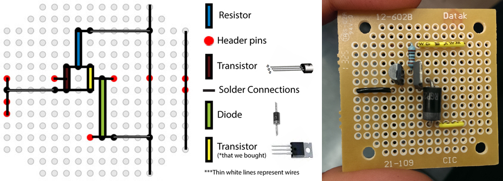

Electrical component
One major challenge we faced was that the solenoids we created took in around 10V, but the Arduino only gave out 5V.
That left us with the problem of determining how to control our solenoids with our Arduino. Ultimately, we decided to
use two separate power sources (a 12V source and our 5V Arduino), and use transistors to switch on and off each of
the solenoids.
Since the solenoids we designed required 10V and drew a current of 1.2A, that helped us specify which components were
necessary for the circuit. We designed our switch with a set of two transistors. By giving our first transistor
a signal, we were able to pass current to the second transistor which powered the solenoid.
To drop the voltage for the first transistor, we used a 1kΩ resistor to prevent the first transistor from
overheating. We also used a diode in parallel with the solenoid to prevent any excess current from travelling back
through the circuit. In each box, we had one circuit of the same design; thus, in total, we had eight connected circuits.

In keeping with our minimalistic design, we chose to use perfboards instead of breadboards to save space.
We soldered everything for each box onto each perfboard, including lights, MOSFETs, a solenoid, and an IR sensor.

Here is a diagram of our ribbon wire:

Since the first box contains the Arduino, the components in the first box connect directly to the Arduino
without going through the ribbon wire.